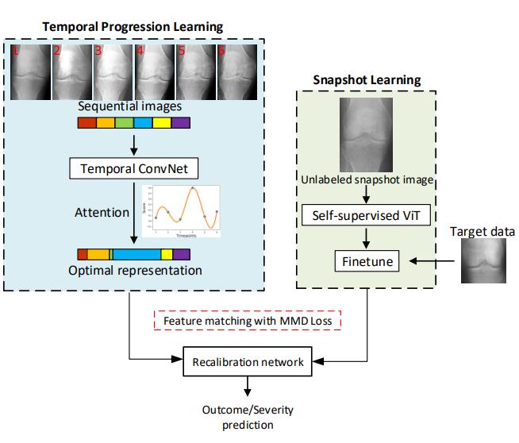

Aishik Konwer5th year PhD candidate Department of Computer Science, Stony Brook University Email: akonwer@cs.stonybrook.edu, Mobile: +1-6317471244 Resume • Google Scholar • Github • Linkedin | ||||||
I am a Research Assistant at Imagine lab under the supervision of Prof. Prateek Prasanna.
Before joining SBU, I did my Bachelor in Technology (Btech) from the Institute of Engineering & Management, Kolkata (India), majoring in Electronics and Communication Engineering. During my undergraduate, I particularly worked on research problems such as Scene Text Detection and Recognition, Handwriting Recognition, Writer Identification, and Script Identification.
Research Interest: My current research interests lie in deep learning and computer vision in general, including multimodal learning, deep generative models, and medical imaging.
My thesis focuses on designing algorithms that learn efficiently from imperfect 2D/3D/multi-stained medical imaging datasets. Some of my works include enhancing multimodal foundational models (VLMs) with efficient prompts, applying generative approaches such as GANs and conditional diffusion models, fine-tuning LLMs, and customizing meta-learning/few-shot algorithms for clinical tasks. These tasks span medical image segmentation, caption generation, and future timepoint prediction in limited data settings.
I am currently on the job market for Research Scientist roles.
Recent News
Education
| Stony Brook University, USA
PhD in Computer Science & Engineering Aug 2019 - June 2024 | ||||||
| Institute of Engineering & Management, India
Btech in Electronics and Communication Engineering Aug 2013 - June 2017 | ||||||
Research Experiences
| Indian Statistical Institute, Kolkata, India
Under Prof. Umapada Pal Sept 2016 - Sept 2017 [Certificate] | ||||||
| Indian Institute of Technology Roorkee, India
Under Prof. Partha Pratim Roy Sept 2017 - March 2018 [Certificate] | ||||||
Industry
| GE Healthcare, USA
AI Scientist Intern May 2024 - August 2024 | ||||||
| SRI International, USA
Deep Learning Research Intern May 2023 - August 2023 | ||||||
| Roche, USA
Advanced ML Research Intern May 2022 - August 2022 | ||||||

| ||||||
| Cognizant, India
Datawarehouse developer Dec 2017 - July 2019 | ||||||
Selected Research
|
Enhancing SAM with Efficient Prompting and Preference Optimization for Semi-supervised Medical Image Segmentation
|
|
|
MetaStain: Stain-generalizable Meta-learning for Cell Segmentation and Classification with Limited Exemplars
|
|
|
Enhancing Modality-Agnostic Representations via Meta-Learning for Brain Tumor Segmentation
|
|
|  |
Temporal Context Matters: Enhancing Single Image Prediction with Disease Progression Representations
|

|
Attention-based Multi-scale Gated Recurrent Encoder with Novel Correlation Loss for COVID-19 Progression Prediction
|
|
Predicting COVID-19 Lung Infiltrate Progression on Chest Radiographs Using Spatio-temporal LSTM based Encoder-Decoder Network
|
|
|
A New GVF Arrow Pattern for Character Segmentation from Double Line License Plate Images
|